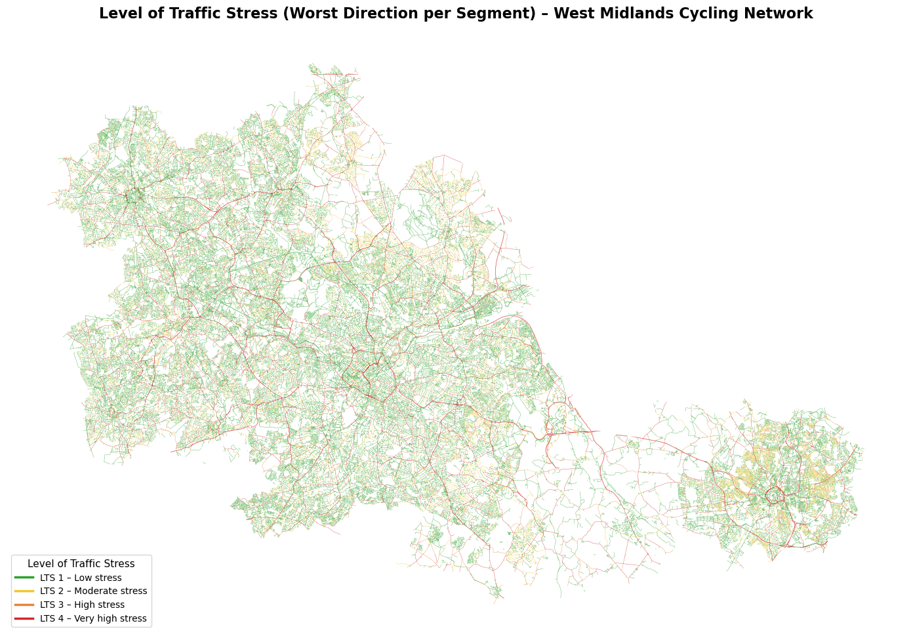

import warningswarnings.filterwarnings('ignore')import osfrom pathlib import Pathimport numpy as npimport pandas as pdimport geopandas as gpdimport matplotlib.pyplot as plt# Project pathsDATA_DIR = Path('../Data/Raw')CLEANED_DIR = Path('../Data/Cleaned')OUTPUT_DIR = Path('../Data/Cleaned')CRS_BNG ='EPSG:27700'pd.set_option('display.max_columns', None)print(f"Working directory: {os.getcwd()}")
Working directory: /Users/pippin/Library/CloudStorage/OneDrive2-UniversityCollegeLondon/Dissertation_CASA&TfWM/Code
1. Load Input Data
The link-level LTS classification adapts the Mekuria et al. (2012) framework by replacing its North American thresholds with those from LTN 1/20, the statutory design standard for cycling infrastructure in England and Northern Ireland. Although the breadth of CLoS’s 25 subcriteria prevents the tool from capturing population-level acceptability, the core subcriteria under the Safety principle, addressing motor traffic speed (Criterion 10), volume (Criterion 11), segregation provision and carriageway width (Criterion 12), are constructed on CROW-derived logic that classifies conditions by the interaction between prevailing speed, traffic volume, facility type, and available width (CROW, 2016), directly consistent with the LTS framework. It is this subset that the present study selects for link-level LTS assignment.
LTN 1/20 further supplements these subcriteria with a speed-volume-facility matrix defining which traffic conditions require protected, lane-based, or mixed-traffic provision for “most people” to cycle. This population logic maps directly onto the LTS framework: conditions that LTN 1/20 deems suitable for most people, including children, correspond to LTS 1; conditions that exclude some potential users correspond to LTS 2; conditions suitable for few people correspond to LTS 3; and conditions triggering a critical safety failure correspond to LTS 4 (Figure X).
Facility type
LTS 1
LTS 2
LTS 3
LTS 4
Off-Road
All conditions
—
—
—
Shared Use
All conditions
—
—
—
Fully Kerbed Cycle Track
All conditions
—
—
—
Stepped cycle track
V85 ≤30 mph
V85 30–37 mph
≥37 mph
—
Light segregation
V85 ≤30 mph
V85 30–37 mph
≥37 mph
—
Mandatory cycle lane
Width ≥1.8m, V85 ≤20 mph, AADT ≤5,000
Width ≥1.8m, V85 20–30 mph, AADT ≤5,000
Width <1.8m; or V85 >30 mph; or AADT 5,000–10,000
V85 ≥37 mph; or AADT ≥10,000
Advisory cycle lane
Width ≥1.8m, V85 ≤20 mph, AADT ≤5,000
Width ≥1.8m, V85 20–30 mph, AADT ≤5,000
Width <1.8m; or V85 >30 mph; or AADT 5,000–10,000
V85 ≥37 mph; or AADT ≥10,000
Mixed traffic
V85 ≤20 mph, AADT ≤2,500
V85 20–30 mph, AADT 2,500-5,000
V85 30–37 mph; or AADT 5,000–10,000
V85 ≥37 mph; or AADT ≥10,000; or nearside lane 3.2–3.9m and AADT ≥5,000
Notes:
Where multiple criteria apply to a single segment, the overall LTS is determined by the worst-performing criterion (non-compensatory).
Thresholds are derived from the CLoS Safety subcriteria (Criteria 9–12, 15) in LTN 1/20 Appendix A, supplemented by the speed-volume-facility matrix in Figure 4.1, which the CLoS itself references as complementary guidance for determining appropriate separation levels.
Motor traffic speed is represented throughout by the estimated 85th percentile speed (V85), consistent with the measurement basis specified in LTN 1/20 Criteria 9 and 10. V85 is estimated from OS NGD average speed data (see Section 4.2).
Motor traffic volume is expressed as Annual Average Daily Traffic (AADT), used as a proxy for the passenger car unit (PCU) thresholds specified in LTN 1/20 Criterion 11. LTN 1/20 additionally specifies HGV composition thresholds (>5% for critical fail, 2–5% for score 0); these could not be applied due to the absence of network-wide vehicle composition data and are acknowledged as a limitation.
Rural exception: mixed traffic segments with V85 ≤30 mph and AADT ≤1,000 are classified as LTS 1, following LTN 1/20 Figure 4.1 Note 3.
Speed
Prevailing speed is represented by the estimated 85th percentile speed (V85), consistent with the measurement basis specified in CLoS. V85 is preferred over posted speed limits because actual operating speeds frequently diverge from the limit depending on road geometry and enforcement, offering a more reliable measure of cycling stress (Fitzpatrick and Program, 2003; European Commission, 2021; Department for Transport, 2025). #### 85th Percentile Speed The OS NGD Average and Indicative Speed dataset (Basemap, via PSGA) provides two relevant fields:
indicativespeedlimit_mph: the posted speed limit derived from road signage. This provides a legal upper bound but does not reflect actual driving speeds.
averagespeed_*_kph: observed mean vehicle speeds from in-vehicle telematic systems, disaggregated by time period (8 weekday periods, 5 weekend periods) and direction of travel.
However, individual vehicle speed distributions are not available from this dataset. The 85th percentile speed cannot be calculated directly, as it requires the full distribution (or at minimum the standard deviation) of individual vehicle speeds at each link.
Estimation Approach: DMRB CA 185
To bridge this gap, this study applies the estimation method set out in the Design Manual for Roads and Bridges (DMRB) CA 185 Vehicle Speed Measurement (National Highways, 2019).
DMRB CA 185 Equation 3.1.2a defines the 85th percentile speed as:
\[p_{85} = m + s\]
where \(m\) is the mean speed and \(s\) is the standard deviation of measured vehicle speeds. This formula is based on the established finding that speed distributions are “to all intents and purposes normal (Gaussian)”, and that the 85th percentile lies approximately one standard deviation above the mean (Note 1 to Equation 3.1.2a).
Since the standard deviation is not available from the OS NGD average speed data, it is estimated using the empirical relationship given in Note 3 to Equation 3.1.2a:
\[s \approx \frac{m}{6}\]
Substituting into Equation 3.1.2a:
\[p_{85} = m + \frac{m}{6} = \frac{7m}{6}\]
Width
OS NGD provides carriageway width at the link level through average and minimum width attributes. For cycle lanes, this study uses the separately recorded modal lane width rather than the minimum, as it better captures typical conditions along a segment. For mixed traffic on single carriageways, average road width is used to assess the critical nearside lane width range of 3.2 to 3.9 m associated with elevated close-pass risk: on one-way roads, total width serves directly as lane width; on two-way roads, lane width is approximated as half the total width, with the override applied only where AADT exceeds 5,000, as lower volumes allow drivers to overtake via the opposing lane. Segments triggering this override are classified as LTS 4.
Traffic Volume
OS NGD does not include motor traffic volume attributes. To address this, major road volumes were obtained directly from DfT annual average daily traffic (AADT) count point data, while minor road volumes were estimated following the methodology of Morley and Gulliver (2016). A Poisson GLM was constructed using road network characteristics extracted via pgRouting on the England OSM network as predictors and DfT count point observations as the dependent variable. Five-fold cross-validation (n = 3,695 count points) yields an R² of 0.604 ± 0.019 and Spearman’s ρ of 0.803 ± 0.015, considered sufficient for the coarse-grained LTS classification task. Predicted and observed AADT values were assigned to OS NGD links via nearest-network spatial join. For the small number of links where no match was achieved, volume was imputed using the median AADT of the corresponding road classification to ensure network-wide coverage.
Input Datasets
File
Source
Content
network_with_volume.gpkg
02_volume_projection output
Cycleable network with facility type, AADT, road width, and network topology
trn_rami_averageandindicativespeed.gpkg
OS NGD (Basemap, via PSGA)
Indicative speed limits and observed average speeds for all road links
Classification proceeds from the most protected facility types (Off-Road, Shared Use, Fully Kerbed Cycle Track), which receive a blanket LTS 1, through partially segregated facilities (Stepped Cycle Track, Light Segregation), to on-carriageway facilities (Mandatory and Advisory Cycle Lanes, Mixed Traffic), which require progressively more input variables.
A directional complication arises for the 2,838 links where a bidirectional road carries cycling infrastructure in only one direction (cyclelaneinfo_direction == 'In Direction'). On these links the forward direction is classified according to the infrastructure present, while the reverse direction — which lacks any cycling provision — is re-classified as Mixed Traffic (Section 2.6). The two directions may therefore receive different LTS scores.
Code
# --- Identify links WITH cycling infrastructure ---has_cycle_infra = network['facility_type'].isin(['Shared Use', 'Advisory Cycle Lane', 'Fully Kerbed Cycle Track','Mandatory Cycle Lane', 'Stepped Cycle Track', 'Light Segregation'])roads_with_infra = network[has_cycle_infra].copy()print(f"\nRoad links with cycling infrastructure: {len(roads_with_infra):,}")print(f" out of {len(network):,} road links ({len(roads_with_infra)/len(network)*100:.1f}%)")print()# --- Cross-tab: directionality vs cyclelaneinfo_direction ---print("="*60)print("Cross-tab: Road Directionality × Cycle Lane Direction")print("(Only links WITH cycling infrastructure)")print("="*60)ct = pd.crosstab( roads_with_infra['directionality'], roads_with_infra['cyclelaneinfo_direction'], margins=True, dropna=False)print(ct)print()# Also check sideoflink for contextprint("="*60)print("sideoflink distribution (links with cycling infra)")print("="*60)print(roads_with_infra['sideoflink'].value_counts(dropna=False))
Road links with cycling infrastructure: 6,847
out of 480,228 road links (1.4%)
============================================================
Cross-tab: Road Directionality × Cycle Lane Direction
(Only links WITH cycling infrastructure)
============================================================
cyclelaneinfo_direction Both Directions In Direction All
directionality
Both Directions 3077 1028 4105
In Direction 1210 544 1754
In Opposite Direction 988 0 988
All 5275 1572 6847
============================================================
sideoflink distribution (links with cycling infra)
============================================================
sideoflink
Left 3762
Right 3042
Centre 43
Name: count, dtype: int64
Segments classified as Off-Road Cycle Track, Shared Use, or Fully Kerbed Cycle Track are physically separated from general motor traffic and therefore eliminate direct interactions between cyclists and moving vehicles. Such environments are generally considered suitable for users of all ages and abilities, including children and less confident cyclists, and represent the lowest level of traffic stress within the LTS framework.
Accordingly, all such segments are classified as LTS 1 without further assessment of traffic speed, motor vehicle flow, or carriageway characteristics.
Stepped cycle tracks provide vertical separation between cyclists and motor traffic. The stress level is determined solely by prevailing speed (V85), as the physical step eliminates direct interaction with traffic flow.
Light segregation provides a degree of physical separation through features such as wands, armadillos, or bolt-down separators. As with stepped cycle tracks, the stress level is determined solely by prevailing speed (V85).
Mandatory and advisory cycle lanes are classified using the same three-component non-compensatory approach: cycle lane width, motor traffic volume (AADT), and prevailing speed (V85). Each component is independently translated into an LTS score, and the overall classification is determined by the worst-performing criterion.
Cycle lane width is represented using the modal width (cyclelaneinfo_modalwidth_m) rather than the minimum. While minimum width reflects the most constrained sections of a facility, modal width better represents the typical conditions experienced by cyclists along a route.
Mixed traffic segments are classified using a two-component non-compensatory approach based on motor traffic volume (AADT) and prevailing speed (V85). Each component is independently scored and the overall LTS is determined by the higher of the two.
Component
LTS 1
LTS 2
LTS 3
LTS 4
Speed (V85)
≤20 mph
20–30 mph
30–37 mph
≥37 mph
Volume (AADT)
≤2,500
2,500-5,000
5,000–10,000
≥10,000
Two additional modifiers are applied after the base classification:
Rural exception (LTN 1/20 Figure 4.1 Note 3): Mixed traffic segments with V85 ≤30 mph and AADT ≤1,000 are classified as LTS 1, recognising that achieving operating speeds of 20 mph may be impractical in rural settings and that shared routes with speeds of up to 30 mph may still be considered generally acceptable where motor traffic flows are very low.
Critical-width override (LTN 1/20 Criterion 12): On single carriageway roads, nearside lane widths within the 3.2–3.9 m range are associated with elevated close-pass risk. For one-way roads, total width serves directly as lane width. For two-way roads, lane width is approximated as half the total width, with the override applied only where AADT exceeds 5,000, as lower volumes allow drivers to overtake via the opposing lane. Segments triggering this override are classified as LTS 4.
The final link-level LTS is determined as the worst (highest) of the forward and reverse direction scores. For the majority of links, both directions share the same classification; only those with asymmetric cycling infrastructure (Section 2.6) may differ. Taking the worst direction provides a conservative, undirected summary consistent with Furth et al. (2016) and suitable for subsequent connectivity and accessibility analyses.
Code
# =============================================================================# 3. LTS Classification Summary# =============================================================================# Each directed edge now has its own LTS — no need for lts_reverse / lts_worstprint("="*60)print("LTS distribution (per directed edge)")print("="*60)print(network['lts'].value_counts(dropna=False).sort_index())print(f"\nUnclassified: {network['lts'].isna().sum():,}")print("\nLTS by facility type:")print( network.groupby('facility_type')['lts'] .value_counts(dropna=False) .unstack(fill_value=0) .astype(int))# Optional: worst-direction LTS per original link (for undirected comparison)lts_worst = network.groupby('osid')['lts'].max().rename('lts_worst')print(f"\n{'='*60}")print("LTS worst-direction per original link (undirected view)")print("="*60)print(lts_worst.value_counts(dropna=False).sort_index())# Directional asymmetry diagnosticlts_by_dir = network.groupby('osid')['lts'].agg(['min', 'max'])asym = (lts_by_dir['min'] != lts_by_dir['max']).sum()print(f"\nLinks with different LTS by direction: {asym:,}")
import matplotlib.pyplot as pltfrom matplotlib.lines import Line2D# LTS colour schemelts_colors = {1: '#2ca02c', 2: '#f0c929', 3: '#e8833a', 4: '#d62728'}lts_labels = {1: 'LTS 1 – Low stress', 2: 'LTS 2 – Moderate stress',3: 'LTS 3 – High stress', 4: 'LTS 4 – Very high stress'}# Collapse directed edges → one row per original link, keeping worst LTSlts_worst = network.groupby('osid').agg( lts_worst=('lts', 'max'), geometry=('geometry', 'first'))lts_worst = gpd.GeoDataFrame(lts_worst, geometry='geometry', crs=network.crs)fig, ax = plt.subplots(figsize=(14, 16))for lts in [1, 2, 3, 4]: subset = lts_worst[lts_worst['lts_worst'] == lts] subset.plot(ax=ax, color=lts_colors[lts], linewidth=0.3, alpha=0.8)legend_elements = [ Line2D([0], [0], color=lts_colors[i], linewidth=2.5, label=lts_labels[i])for i in [1, 2, 3, 4]]ax.legend(handles=legend_elements, loc='lower left', fontsize=10, frameon=True, facecolor='white', edgecolor='#cccccc', title='Level of Traffic Stress', title_fontsize=11)ax.set_axis_off()ax.set_title('Level of Traffic Stress (Worst Direction per Segment) – West Midlands Cycling Network', fontsize=16, fontweight='bold', pad=20)plt.tight_layout()plt.show()

4. Export
The classified network is exported as a GeoPackage for use in subsequent notebooks. Intermediate average speed columns are dropped to reduce file size; only the derived est_v85_mph field is retained. The output contains the original link geometry and attributes alongside lts (forward direction), lts_reverse, and lts_worst.
Code
# =============================================================================# 4. Export# =============================================================================# Drop intermediate average speed columns to reduce file sizedrop_cols = [c for c in network.columns if'averagespeed'in c]network_export = network.drop(columns=drop_cols, errors='ignore')output_path = OUTPUT_DIR /"network_lts_classified.gpkg"network_export.to_file(output_path, driver='GPKG')print(f"Exported to: {output_path}")print(f" Links: {network_export.shape[0]:,}")print(f" Columns: {network_export.shape[1]}")
Exported to: ../Data/Cleaned/network_lts_classified.gpkg
Links: 480,228
Columns: 44